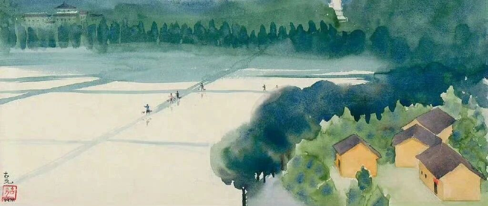

绝对会辞职，提前退休的人！
点击关注 秋秋在分享
一起实现财务自由退休
大家好，我是秋秋呀～
日本有一个博主叫「绝对会辞职的人」，他通过节俭的生活，想在50岁时存够1亿日元，差不多500万提前退休FIRE。
在他的晚餐中，几乎没有任何鱼类和肉类，哪怕是鸡蛋，都是“奢侈品”。

他平时还很会薅羊毛，比如用便利店的积分兑换食物。
如果豆芽打折也会连续一周吃豆芽。
就这样生活了20多年，45岁存下了快500万。

这位大叔为什么执着于辞职，提前退休FIRE呢？
因为他的一生总结如下：
在年轻的时候入职了黑心企业
24小时的强制工作
遭遇职场霸凌
消失的年收入

所以吃饭的时候喜欢看监狱题材的电影，想象自己刑满释放的那一天，也就是提交辞职信的那一天。
我被他的精神感动。
很多人会觉得为了“存钱”过苦行僧般的生活，不值得！
我想，很值得！
比如我高中，经常5点起床23点睡觉，吃饭的时候都要抽空背单词，值得吗？
从来没有人说，在读书的时候把身体学坏了，享受青春吧。
所以你把做其他的时间精神用在FIRE上，距离财务自由一定是越来越近的。
我们一直都在为不同的事“吃苦”，唯独在存钱这件事上，很容易被消费主义洗脑。
这股劲和好好读书其实是一样的。
当你没拿到好的人生底牌，再不吃点苦、动点脑子，怎么追求自己想要的呢？

在日常中感受小幸福，确实很重要。
可是「绝对会辞职的人」这种工作环境，无异于让一个在大山里生活的孩子去知足常乐。
当你身边都是黑暗，再怎么学会欣赏，也改变不了现实。
我不想在危险来临时，当“屋子里睡着的人”。
鲁迅在《呐喊》里写过：
假如有这么一间铁屋子，绝无窗户而且是万难破毁的，里边有许多熟睡的人们，不久就要被闷死，然而从昏睡入死，他们全然不知道就要死的悲哀。
现在你大嚷一声，惊醒这几个较为清醒的人，但是这不幸的少数者要去承受这无可挽救的临终的苦楚，你倒以为你对得起他们。
“如果我嚷几声，能叫醒那几个人，你就绝不能说，他没有毁坏这铁屋的希望。”
我写关于FIRE提前退休的文章也想过，让大家把工作当快乐，别努力存钱，过好当下不就好了？
又会想，万一有想醒的人呢。
现在的社会，钱能干什么？钱能买来什么？
钱居然可以买来时间和生命。
5000块钱就可以买一个人一个月的黄金时间，甚至下班还要待命。
100万就有人付出几十年的时间，既没有顾好身体，也没有顾好家人和生活。
当你喜欢工作、喜欢周围的一切，是不会萌生提前退休的想法。就像原生家庭幸福的孩子，会把它叫做“家”。
只有那些一年一年苦熬着的，为了生活、为了工作、为了早日脱身的，存钱是必要的。
存钱反而不是为了消费，而是为了有自由。
我想过什么样的生活？
“时间可以自由支配，每天都睡到自然醒，每天可以到菜市场买自己喜欢的蔬菜水果，每天都可以做自己喜欢的事情。
冬季三个月想去三亚过冬就过去，夏天想去大理或者海边住两个月直接就走。
我回了趟老家，发现小城市的烟火气，工作日去各种公园，拍照，参加志愿者活动，去寺院做义工，学泰语学化妆要去旅居。
毫无顾虑，这就是fire的意义.....”
FIRE不是一个具体的数字，而是具体的生活。
觉得FIRE生活方式可行的人，是先觉得可行会想办法解决其中的遇到的各种问题。
觉得不行的人才会先觉得不行，再想各种理由来自洽。
我认定的目标，就只会想路径，而不会想行不行。
很多事情都是这样，是方法而不是能力。
年轻也是这样，它不是由年龄决定的，是一种姿态，是昂扬的生命力和斗志。
像塞缪尔厄尔曼的文章写的:
年轻，
并非人生旅程的一段时光，
也并非粉颊红唇和体魄的矫健。
它是心灵中的一种状态，
是头脑中的一个意念，
是理性思维中的创造潜力，
是情感活动中的一股勃勃的朝气，
是人生春色深处的一缕东风。
年轻意味着
甘愿放弃温馨浪漫的爱情
去闯荡生活
意味着超越羞涩、怯懦和
欲望的胆识与气质。
而60岁的男人
可能比20岁的小伙子，
更多地拥有这种胆识与气质。
没有人仅仅因为时光的流逝
而变得衰老，
只是随着理想的毁灭，
人类才出现了老人。
岁月可以在皮肤上留下皱纹，
却无法为灵魂刻上一丝痕迹。
忧虑、恐惧、缺乏自信
才使人佝偻于时间尘埃之中。
无论是60岁还是16岁，
每个人都会被未来所吸引，
都会对人生竞争中的欢乐
怀着孩子般无穷无尽的渴望。
在你我心灵的深处，
同样有一个无线电台，
只要它不停地从人群中，
从无限的时间中
接受美好、希望、欢欣、
勇气和力量的信息，
你我就永远年轻。
一旦这无线电台坍塌，
你的心便会被玩世不恭
和悲观失望的寒冷酷雪所覆盖，
你便衰老了。
即使你只有20岁。
但如果这无线电台
始终矗立在你心中，
捕捉着每个乐观向上的电波，
你便有希望超过年轻的80岁。
所以，只要勇于有梦，
敢于追梦，勤于圆梦，
我们就永远年轻！
追求财务自由并制定计划且实实在在执行的人，都是极度渴望自由的人。
我佩服这种人。
我佩服每一个为自己人生负责、活的明白的人。